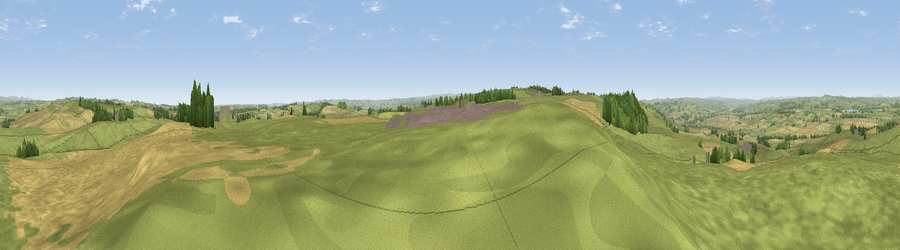

Viewpoint near Great Whittington
#10106 in England · top 18% of its area beats it · near Great WhittingtonWhere it is
The exact computed spot (NY 98325 70975). Click the marker for map links.
The view, rendered

A 360° render of this exact spot computed from the terrain model, tree cover and land cover — summer colours, afternoon light, calibrated against photographs of famous viewpoints. Real trees, hedges and buildings will differ in detail.
The panorama
Grey silhouette: terrain skyline in each direction (720 bearings, Earth curvature and refraction included). Dashed green: skyline with trees (+15 m) and buildings (+8 m) as obstacles. Blue strip: how far the ground is visible on each bearing.
Where the view opens
Wedge length = distance to the farthest visible ground on that bearing (vegetation-aware). Rings at 10, 25 and 50 km.
What fills the view
67% grassland · 28% cropland · 5% woodland ·
Angular shares of the visible panorama (visual magnitude), not map area. Landscape diversity 0.35 (0–1 Shannon).
Key numbers
More beautiful places nearby
The staircase of upgrades: each row has a higher view potential than everything closer. Driving times are estimates from straight-line distance, calibrated against real road routing — check an actual route before setting out.
| Place | Direction | Drive | Score |
|---|---|---|---|
| Duns Moor | NNE · 2 km | ~5 min | 65.6 |
| Viewpoint near Chollerford | WSW · 4 km | ~9 min | 67.5 |
| Viewpoint near Fourstones | WSW · 8 km | ~17 min | 71.4 |
| Viewpoint near West Woodburn | NNW · 15 km | ~26 min | 73.4 |
| Viewpoint near Greenside | SE · 17 km | ~30 min | 74.2 |
| Viewpoint near Burnopfield | ESE · 24 km | ~40 min | 75.4 |
| Pontop Pike | SE · 25 km | ~40 min | 77.8 |
| Viewpoint near Thropton | N · 28 km | ~44 min | 81.8 |
55.03329, -2.02774 · source: screening · position refined by local search. Computed location — check access rights before visiting.